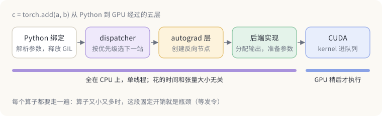

线索是：一次算子调用要穿过五层 → 其中最特别的一层是 dispatcher，它决定这次调用依次经过哪些“功能” → 这五层加起来每次要花掉若干微秒，算子多而小的时候就成了瓶颈 → 最后给出一张总目录，告诉你任何一个算子的入口在哪。读完这一单元，你应该能在 PyTorch 仓库里，从任何一个 Python 函数一路找到它的 CUDA 实现。
第 2 部分 · PyTorch 执行栈2.3 从一行 Python 到一个 kernel
这一单元回答写下 torch.add(a, b) 之后，到 GPU 上真的开始算之间，隔着多少层？
承接 2.1–2.2。它解释 0.1 里的“等发令”从哪里来，也是读 PyTorch 源码时找入口的地图。
- 一次算子调用要穿过五层：绑定、dispatcher、autograd、后端实现、CUDA
- dispatcher 是一张“算子 × 功能”的表，一次调用按优先级逐层往下传
- 这条路每次要花若干微秒；模型小、算子碎时，它就成了瓶颈
- native_functions.yaml 是所有算子的总目录，读源码从这里找入口
讲解
1一次算子调用要穿过五层：绑定、dispatcher、autograd、后端实现、CUDA
写下 torch.add(a, b)，到 GPU 上开始计算之间依次发生：Python 绑定解析参数；dispatcher 查表决定交给谁；autograd 层记账；后端的实现准备好输出张量并选定 kernel；最后调用 CUDA，把 kernel 放进 GPU 的任务队列，然后立刻返回。

前四层是每个算子都要付的固定开销 以
c = torch.add(a, b)为例，a、b 是 GPU 上需要求梯度的张量。一、Python 绑定。 Python 解释器查到
torch.add这个函数，它是 C++ 写的。绑定代码把 Python 的参数解析成 C++ 的类型：检查参数个数和类型，在多个重载里选出匹配的那个。然后释放 GIL（0.3），调用 C++ 的at::add。二、dispatcher。
at::add并不直接是实现，它先进入 dispatcher：看输入张量带着哪些“功能”（需要求梯度、在 CUDA 上……），找出优先级最高的一项，转给负责它的函数。下一节细讲。三、autograd 层。 因为输入需要求梯度，最先接手的是 autograd 的包装函数（2.2 说过它是生成的）。它做三件事：创建加法的反向节点；再次通过 dispatcher 调用“真正的加法”（这次跳过 autograd 这一层）；拿到结果后，把节点挂到结果上。
四、后端实现。 第二次分发落到 CUDA 后端的加法实现。它在 CPU 上做一些准备：检查两个输入的形状能否广播、数据类型怎么提升；算出输出的形状；向分配器要一块显存放输出（2.1）；根据数据类型选出要用的 kernel。
五、CUDA。 调用 CUDA 的接口启动 kernel。这一步只是把“执行这个 kernel，参数是这些”放进 GPU 的任务队列，CPU 不等它执行就返回了（3.1 讲过异步）。
然后一路返回：结果被包成一个 Python 的
Tensor对象，重新拿回 GIL，交还给解释器，赋值给c。这时 GPU 上的加法可能还没开始算。从这条路上看到的三件事。
- 第一到第四层全在 CPU 上，单线程，花的时间和张量的大小无关。
- 一行 Python 对应的不一定是一个 kernel。有些算子内部会调用别的算子，每一次都要再走一遍二到五层。
- 输出的显存是每次调用时现分配的。所以 2.1 的分配器必须快。
这条路也是读源码的路线图：每一层对应仓库里的一个位置，下面的源码导读会带你走一遍。
源码导读：跟着 torch.add 走一遍
目标是在仓库里把上面五层各找到一处。文件路径是 PyTorch 2.x 的，以你手头的版本为准。其中有几个文件是构建时生成的，没有编译过的源码树里看不到，可以看生成它们的模板，或者直接看安装包里带的头文件。
总目录：
aten/src/ATen/native/native_functions.yaml。 搜func: add.Tensor，会看到这个算子的签名，以及它的实现叫什么名字。这是所有路线的起点。一、绑定。 生成的文件
torch/csrc/autograd/generated/python_torch_functions_*.cpp里有THPVariable_add。里面能看到三样东西：一个参数解析器（列出了add的所有重载签名）；一个pybind11::gil_scoped_release（释放 GIL）；对self.add(other)的调用。生成它的脚本是tools/autograd/gen_python_functions.py。二、dispatcher。
at::add的定义在生成的Functions.h/Operators.cpp里，内容很短：取到这个算子的句柄，调用Dispatcher::call。dispatcher 本身在aten/src/ATen/core/dispatch/Dispatcher.h，分发键的定义在c10/core/DispatchKey.h，那个文件开头的注释把每个键是干什么的写得很清楚，值得读。三、autograd 层。 生成的
torch/csrc/autograd/generated/VariableType_*.cpp里有add_Tensor。找这几行：判断是否需要梯度（compute_requires_grad）；创建AddBackward0节点并设置下一站；在一个 guard 的作用域里调用at::redispatch::add（这就是“再次分发，跳过 autograd”）；最后set_history把节点挂到结果上。四、后端实现。 逐元素的二元运算有一套共用的框架。在
aten/src/ATen/native/BinaryOps.cpp里能找到add的“结构化”定义：一个meta函数负责算输出的形状和类型，一个impl函数负责执行。CUDA 版本的impl在aten/src/ATen/native/cuda/下（文件名里带BinaryMiscOps或BinaryMulKernel之类，加法和几个相近的运算放在一起）。五、kernel 的启动。 CUDA 的逐元素运算最终都调用
gpu_kernel这一族函数，定义在aten/src/ATen/native/cuda/Loops.cuh和CUDALoops.cuh。在那里能看到真正的__global__函数（3.2 讲过它的写法）和启动它的那一行：grid 和 block 的大小是怎么算出来的，用的是哪条 stream。走完之后试着回答：
- 两个形状不同的张量相加，广播是在第几层处理的？
- 如果 a 不需要求梯度，第三层还会经过吗？（不会。dispatcher 直接把调用交给后端。）
a.add_(b)（原地版本）和torch.add(a, b)在哪一层开始走不同的代码？
打个比方像去政府窗口办一件事：先在导办台确认材料（绑定），取号机按业务类型分到窗口（dispatcher），第一个窗口登记备案（autograd），第二个窗口实际办理（后端），最后把文件投进“待处理”的传送带（CUDA 队列）。你拿到回执就走了，文件真正处理是之后的事。
所以一个算子在 CPU 上花的时间和它在 GPU 上的计算量无关：算一个标量加法和算一个大矩阵乘法，前面这五层花的时间差不多。
- 五层里最特别的是第二层。它决定了这次调用要经过哪些“功能”、按什么顺序。
2dispatcher 是一张“算子 × 功能”的表，一次调用按优先级逐层往下传
可以把 dispatcher 想成一张二维表：每一行是一个算子，每一列是一种“功能”（自动求导、混合精度、CUDA 后端、CPU 后端……），格子里是处理函数。调用算子时，根据输入张量算出这次涉及哪些列，从优先级最高的那一列开始；那一格的函数做完自己的事，把自己这一列屏蔽掉，再分发一次，就落到下一列。
要解决的问题。 一次
add可能同时需要好几件事：记下反向节点、转换精度、被编译器追踪、最后在某种硬件上执行。如果把这些全写进add的实现里，上千个算子每个都要写一遍，再加一种功能又要全部改一遍。分发键。 每种功能对应一个键（dispatch key）。键有固定的优先级顺序：像自动求导、混合精度这类“包装”功能排在前面，各种硬件后端排在最后。
算出这次调用的键集合。 来源有三处：
- 每个输入张量自己带的键：它在哪个后端（CPU、CUDA），是否需要求梯度。
- 当前线程“额外打开”的键：比如进入了混合精度的
autocast上下文。 - 当前线程“屏蔽掉”的键：比如在
no_grad里，自动求导被屏蔽。
把前两者合并，再去掉第三者，剩下的集合里优先级最高的那个键，决定了这次调用交给表里的哪一格。
再分发。 以一个需要求梯度的 CUDA 张量为例：
- 第一次分发：集合是 {自动求导, CUDA}，最高的是自动求导。进入 autograd 的包装函数。
- 包装函数做完记账后，把“自动求导”加入屏蔽集合，再调用一次这个算子。
- 第二次分发：自动求导被屏蔽，剩下 {CUDA}。进入 CUDA 的实现。
- 返回时，屏蔽被撤销（用的是 2.1“预备”里讲的 guard 写法）。
如果还开着混合精度，中间会多一站：自动求导 → 混合精度（把输入转成 16 位）→ CUDA。
表里的格子怎么填。 有三种填法：
- 给一个算子在一个键上登记一个实现（一格）。
- 给一个算子登记一个不分键的通用实现（一整行）。
- 给一个键登记一个适用于所有算子的“兜底”函数（一整列）。一些功能就是这样用一个函数覆盖了全部算子。
这对你有什么用。
- 它解释了一批行为：为什么
no_grad里算子更快（少走一站）；为什么混合精度不用改模型代码（它是路上的一站）；为什么 torch.compile 能“看见”所有算子（它在追踪时接管了分发）。 - 读源码时，一个算子的“实现”不止一处。先问清楚你要找的是哪一列：它的反向？它的 CUDA kernel？它在混合精度下的行为？
- 它也是每次调用固定开销的一部分：每多一站，就多一次查表和函数调用。
打个比方像一份文件要过好几个部门盖章：收发室按文件类型算出要经过哪些部门，先送到排在最前面的那个；每个部门办完自己的事，在流转单上划掉自己，再交回收发室送往下一个。
所以自动求导、混合精度、追踪、后端选择这些互不相干的功能，可以各自独立地实现，再自由叠加。新增一种功能或一种硬件后端，只是在表上加一列。
- 这五层加起来要花多少时间？对大多数模型可以忽略，但有一类情况它是主角。
3这条路每次要花若干微秒；模型小、算子碎时，它就成了瓶颈
前四层都在 CPU 上、单线程执行，每个算子大约花几微秒到几十微秒，和张量多大无关。如果 GPU 执行这个算子只需要几微秒，那么时间主要花在了 CPU 的“发令”上，GPU 大部分时间在等下一个任务。
算一笔账。 一个 GPU 上的算子，时间分两部分：
- CPU 一侧：走完前四层，把 kernel 放进队列。量级是几微秒到几十微秒，取决于经过了几站、算子本身的准备工作多复杂。
- GPU 一侧：kernel 实际执行的时间，取决于数据量。
一个中等大小的 Transformer，一步前向加反向大约是几千次算子调用。按每次 20 微秒算，CPU 一侧就要几十毫秒。
- 如果 GPU 上每个算子要算几百微秒（大矩阵乘法），CPU 发令比 GPU 执行快得多，队列里总有任务在排队，GPU 一直在忙。开销可以忽略。
- 如果每个算子在 GPU 上只要几微秒（小模型、小 batch、大量逐元素的小运算），GPU 每做完一个都要等 CPU 发下一个。这时整体速度由 CPU 上那个单线程决定，GPU 利用率可能只有百分之二三十。这就是 0.1 里的“等发令”，3.1 的三面墙里叫“开销受限”。
怎么判断。
- *加倍 batch。* 把 batch 加倍，如果一步的时间几乎不变（吞吐接近翻倍），说明时间主要是和数据量无关的固定开销。如果时间也接近翻倍，说明 GPU 的计算才是主体。这是 Horace He 那篇文章给的办法，最简单也最可靠。
- *看 profiler。* 比较每个算子的 CPU 时间和 CUDA 时间。CPU 时间的总和接近一步的总时间、而 CUDA 时间的总和小得多，就是开销受限。时间线上会看到 GPU 那一行是稀疏的小块，中间有空隙。
- *看 GPU 利用率的形状。* 0.2 讲过：长期稳定在中等水平，是这种情况的典型曲线。
怎么解决，都是 0.1 里“成批处理，摊薄固定成本”的不同做法：
- 加大 batch：同样的发令次数，每次让 GPU 多干活。
- 减少算子个数：把循环改成向量化的写法；用一个现成的大算子代替一串小算子（比如用
F.scaled_dot_product_attention代替手写的注意力）。 - torch.compile（2.5）：把一整段计算编译成少数几个 kernel，还省掉了 Python 和 dispatcher 这几层。
- CUDA Graph（3.6）：连“启动 kernel”这一步的开销也一起省掉。
- 2.6 的 fused 优化器：把几百个参数张量的更新合成一次。
反向也一样。 反向时不经过 Python，但引擎每执行一个节点，同样要走 dispatcher 和后端实现。所以算子碎的模型，前向和反向都受这个限制。
排查：用 profiler 判断瓶颈是不是框架开销
from torch.profiler import profile, ProfilerActivity with profile(activities=[ProfilerActivity.CPU, ProfilerActivity.CUDA]) as prof: for _ in range(3): loss = model(x).sum() loss.backward() torch.cuda.synchronize() print(prof.key_averages().table(sort_by="self_cpu_time_total", row_limit=20))（先跑几步预热再采，3.1 讲过原因。）
看表的最后几行。 表尾有 CPU 时间和 CUDA 时间的总计。
- CPU 总时间 ≈ 墙上时间，CUDA 总时间只有它的几分之一：开销受限。
- CUDA 总时间 ≈ 墙上时间：GPU 一直在忙，瓶颈在计算，去第 3、4 部分找办法。
看每一行。 按
self_cpu_time_total排序后，排在前面的是 CPU 上最花时间的算子。留意两类：- 调用次数（
# of Calls）特别多、每次时间很短的：它们就是“碎”的来源。想想能不能向量化或换成一个大算子。 - 名字不是运算、而是
aten::to、aten::item、aten::copy_这类的：前两个常常意味着数据在 CPU 和 GPU 之间来回搬，或者有隐藏的同步点。.item()会让 CPU 停下来等 GPU 把之前的任务全部做完，在循环里每步调用它，等于放弃了异步带来的重叠。
看时间线。
prof.export_chrome_trace("trace.json") # 用 chrome://tracing 或 Perfetto 打开CPU 那几行是密密麻麻的函数调用，GPU 那一行是 kernel。开销受限时，GPU 行是一个个很短的小块，块与块之间的空隙比块本身还宽；点开空隙对应的 CPU 时间，就能看到那段时间 Python 和框架在做什么。
想知道 Python 层的时间花在哪。 profiler 主要记录的是算子。Python 自身的开销（模型的
forward里大量的小函数调用、属性访问）可以用py-spy这类采样工具看：py-spy top --pid <进程号>会列出当前最耗时的 Python 函数。打个比方像一个手脚极快的厨师配了一个写单子很慢的服务员：每道菜炒 5 秒，但下一张单子要 20 秒才递进来。厨师再快也没用。
所以这种情况下换更快的 GPU 没有用。有效的办法是减少单子的数量：加大 batch 让每个算子干更多的活，用融合把多个算子合成一个，或者用 torch.compile 把这层开销整体去掉。
- 最后给你一张地图。有了它，前面讲的每一层都能在仓库里找到对应的位置。
4native_functions.yaml 是所有算子的总目录，读源码从这里找入口
PyTorch 的每一个算子都在 native_functions.yaml 里登记了一条：名字、参数和返回值的签名、它在各个后端上的实现叫什么。绑定代码、dispatcher 的注册、autograd 的包装，都是构建时照着这张表（和 derivatives.yaml）生成的。
一条记录长什么样。
- func: add.Tensor(Tensor self, Tensor other, *, Scalar alpha=1) -> Tensor structured_delegate: add.out variants: function, method - func: add.out(Tensor self, Tensor other, *, Scalar alpha=1, Tensor(a!) out) -> Tensor(a!) structured: True dispatch: CPU, CUDA: add_out ...（这是示意，实际的条目更长，各版本也略有不同。）读法：
func：算子的全名和签名。点号后面是重载名：add.Tensor是“张量加张量”，另外还有add.Scalar等。签名里的Tensor(a!)表示这个参数会被原地修改。variants：它在 Python 里以什么形式出现。function是torch.add(a, b)，method是a.add(b)。dispatch：在哪些后端上，由哪个 C++ 函数实现。这就是 dispatcher 那张表里“后端”那几列的内容。没有这一项的算子，通常是用其他算子组合出来的，一份实现通用于所有后端。structured/structured_delegate：一种减少重复的写法。add、add_（原地）、add.out（指定输出）三个变体共用一份核心实现，区别只在输出放在哪。真正的实现登记在.out那一条上。
用它找实现的步骤。
- 在表里搜
func: <算子名>。Python 里的名字和这里的名字基本一致。 - 看
dispatch。如果有CUDA: xxx，就去aten/src/ATen/native/cuda/下搜xxx；如果写的是CPU, CUDA: xxx，说明两个后端共用一个入口函数，具体的 kernel 在更下面一层分开，搜到入口后再往下跟。 - 如果只有
CompositeImplicitAutograd或CompositeExplicitAutograd，说明它是用别的算子拼出来的，实现在aten/src/ATen/native/下的某个.cpp里，是一段调用其他算子的普通 C++。 - 想看它的反向：去
tools/autograd/derivatives.yaml搜同一个名字（2.2）。
一个常见的意外。 很多你以为是“一个运算”的函数，其实是组合出来的。比如
torch.nn.functional.layer_norm最后落到一个专门的算子上，而有些看起来简单的函数内部调用了三四个算子，每个都要完整地走一遍 2.3 的五层。看 profiler 时，一个 Python 调用下面挂着好几个aten::开头的条目，就是这个原因。这张表和 torch.compile 的关系。 编译器把模型变成图之后，图里的节点就是这张表里的算子。2.5 会讲到，编译的中间一步是把上千个算子“分解”成一两百个基本算子，分解的规则也是对着这张表写的。
打个比方像一栋大楼的总索引牌：想找任何一家公司，先在牌子上查到楼层和房间号，再上去找。
所以遇到“这个函数的实现在哪”的问题，不要在仓库里盲搜函数名。先在这张表里找到它，看它的实现登记的是什么名字，再去搜那个名字。
串起来
一次算子调用依次经过：Python 绑定（解析参数、释放 GIL）→ dispatcher（查表）→ autograd 层（记账）→ 后端实现（选好的 kernel）→ CUDA（把任务放进队列）。dispatcher 是一张“算子 × 功能”的表，按优先级一层层往下传。这条路每次要花若干微秒的固定开销。所有算子都登记在 native_functions.yaml 里，读源码从它找入口。
考考自己
不看讲解，用自己的话讲一遍。
- 一次 PyTorch 算子调用从 Python 到 GPU 依次经过哪几层？每层做什么？
- dispatcher 是怎样决定一次算子调用交给哪个函数的？“再分发”是怎么回事？
- 什么是“框架开销受限”？怎样判断一个模型是不是这种情况？有哪些解决办法？
- native_functions.yaml 里记录了算子的哪些信息？怎样用它找到一个算子的 CUDA 实现？
术语
- dispatcher
- 分发器
- dispatch key
- 分发键
- redispatch
- 再分发
- binding
- 绑定（Python 到 C++ 的接口）
- codegen
- 代码生成